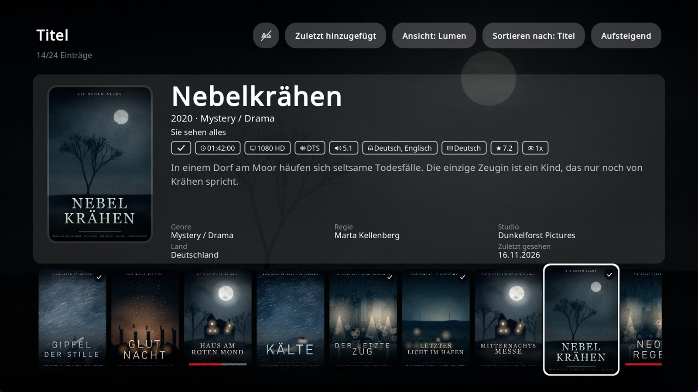
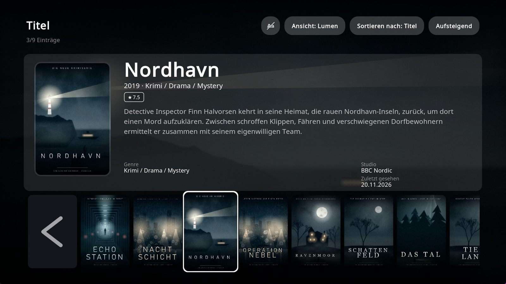
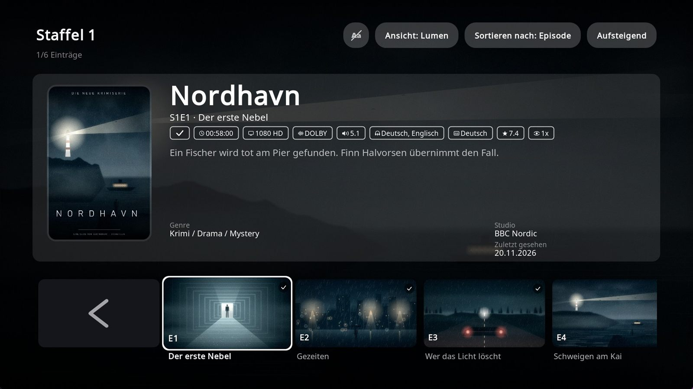
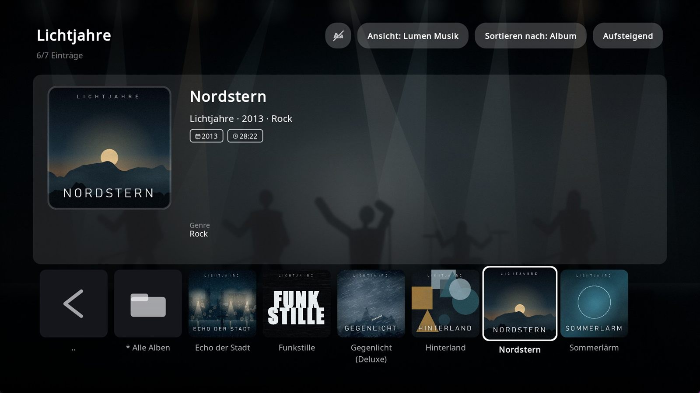
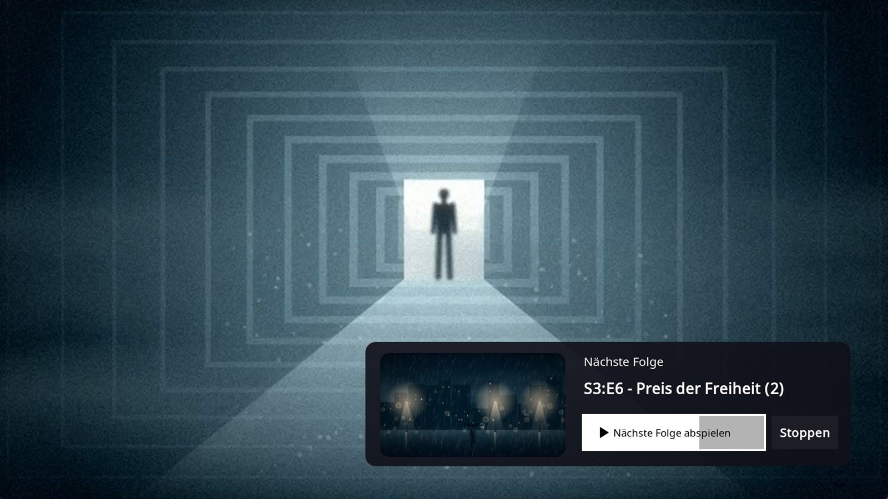
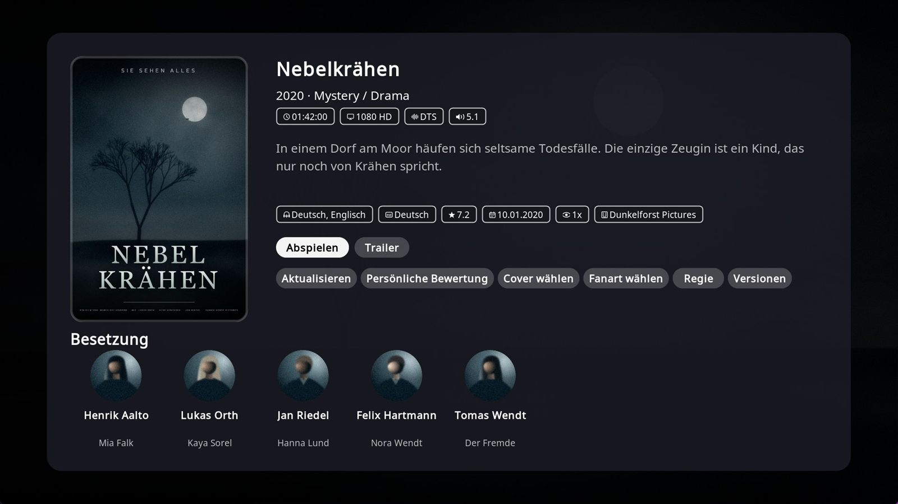
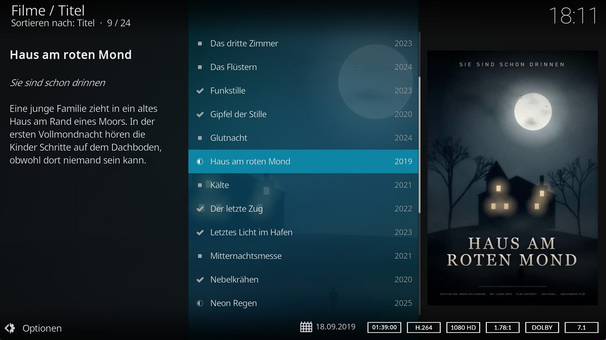

Skin für Kodi
Dein Kodi.
Dein Kodi.
Neu gesehen.
Cover und Fanart im Mittelpunkt. Ruhig, schnell und bis ins Detail einstellbar.
8 Ansichten5 Player-StileNächste FolgeLive-TV22 Sprachen

Cover und Fanart im Mittelpunkt. Ruhig, schnell und bis ins Detail einstellbar.
Lumen hält sich zurück und lässt deine Bibliothek sprechen – mit viel Freiheit, es genau so einzurichten, wie du es magst.
Detailbereich mit Poster, Handlung und Mediendaten. Darunter bis zu acht frei wählbare Widgets mit eigener Bildart. Gesehene Titel lassen sich ausblenden.
Lumen, Poster, Poster Wall, Info, Wand, Kleine Poster, Banner und Liste – dazu drei eigene für Musik. Standardansicht je Bereich, die Bildgröße passt sich der gewählten Bildart an.
Fünf Stile für Video, Live-TV und Musik – von klassisch bis Profi. Mit Clearlogo, Endzeit und Kapitelinfo.
Am Ende einer Folge bietet ein Countdown die nächste an – in sechs Designs. Sofort starten oder stoppen; bei „Mehr Infos“ wartet der Countdown auf dich.
Codec, Auflösung, Ton, Sprachen, Bewertung und mehr als aufgeräumte Chips mit Symbolen. Du wählst je Bereich, welche erscheinen.
Gruppen mit Reitern und eine Beschreibung zu jeder einzelnen Option. Hauptmenü sortieren, eigene Einträge, Sicherung und Wiederherstellung.
Senderliste mit Programmführer im Lumen-Stil und ein passender Player.
Besetzung mit Fotos, eigene Trailer-Suche über YouTube oder TMDb, Wetter im Detailbereich, Suche als Lupe im Hauptmenü.
Der Skin spricht deine Sprache – 22 Übersetzungen, jede Option inklusive.




Serien mit Folgen als Band – und Musik mit eigenen Ansichten: Lumen Musik, Rund und Regal.
Getrennt wählbar für Video und Musik – vom minimalen Klassiker bis zum Profi-Player mit vollem Infopanel.

Ein ruhiges Fenster mit Countdown, sechs Designs und der Nachfrage „Schaust du noch?“ nach mehreren Folgen in Serie.


Zu jeder Option steht direkt auf der Seite eine kurze Beschreibung. Einstellungen sichern, wiederherstellen – oder alles zurücksetzen.

Benötigt Kodi 21 „Omega“. Global Search, Artist Slideshow und YouTube werden automatisch mitinstalliert.
Lade die Repository-ZIP herunter.
In Kodi: Einstellungen › Add-ons › Aus ZIP-Datei installieren und die Datei wählen (unbekannte Quellen ggf. erlauben).
Dann Aus Repository installieren › Timmiotool Repository › Oberfläche › Skin › Lumen.
Aktivieren unter Einstellungen › Oberfläche › Skin.
Lade skin.lumen-1.5.01.zip herunter.
Unter Einstellungen › Add-ons › Aus ZIP-Datei installieren die Datei wählen.
Unter Einstellungen › Oberfläche › Skin „Lumen“ aktivieren.

Eine angepasste Variante der Kodi-Standardoberfläche Estuary.

Stellt die Helligkeit des Raspberry-Pi-Touch-Displays per Regler ein (50–255), auf Wunsch beim Start.
Lumen ist für Kodi 21 „Omega“ gemacht.
In Kodi unter Einstellungen › Oberfläche › Skin › Einstellungen findest du die „Lumen Konfiguration“ – in Gruppen mit Reitern und mit Beschreibung zu jeder Option.
Ja. Die Konfiguration hat die Gruppe „Sicherung & Zurücksetzen“: Einstellungen exportieren und importieren oder alles zurücksetzen.
Nein. Alle hier gezeigten Titel, Cover, Fanart und Bilder sind frei erfunden und extra für diese Seiten erstellt.
Lumen ist kostenlos und steht unter der GPL-2.0-or-later.